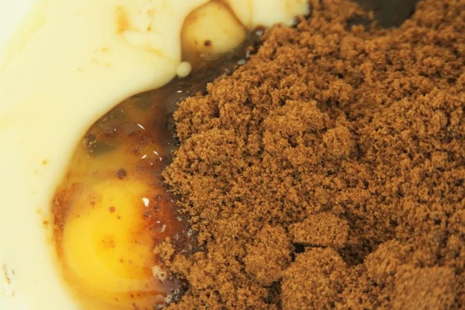
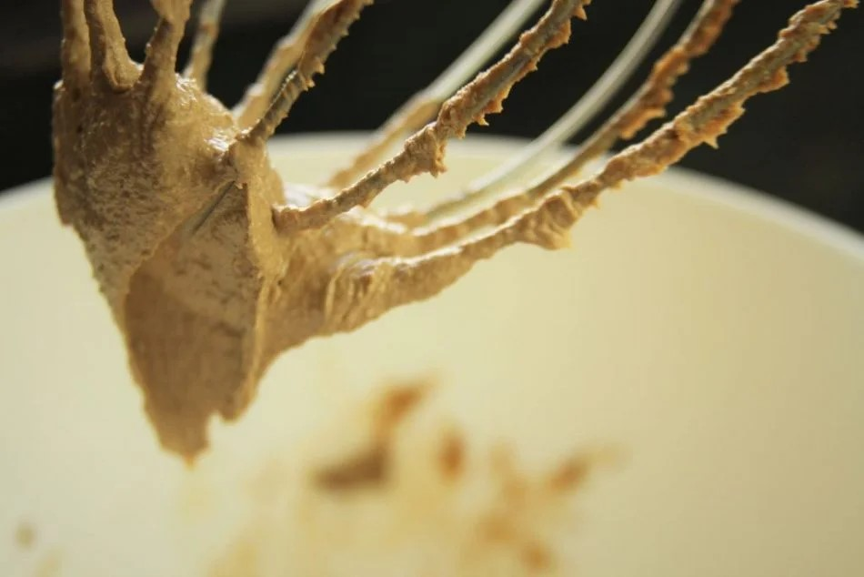
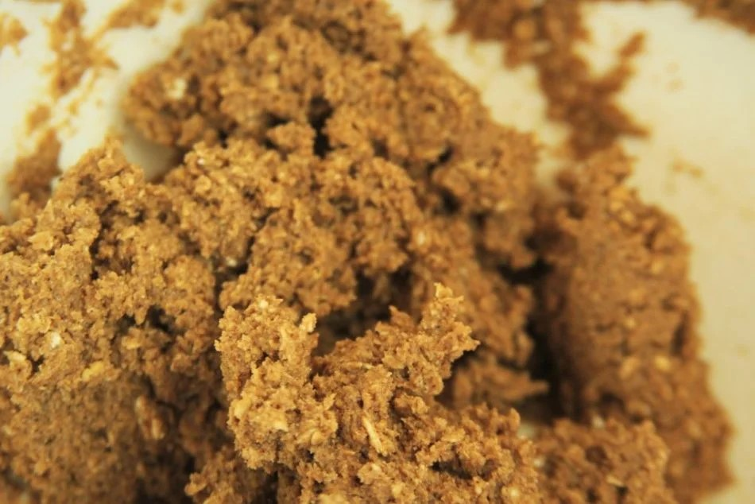
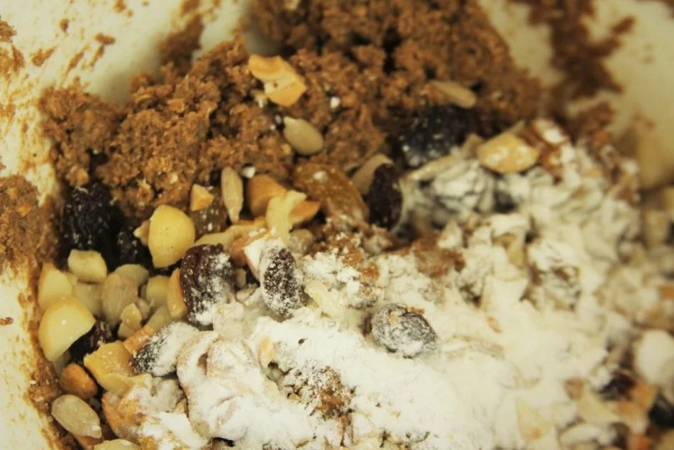
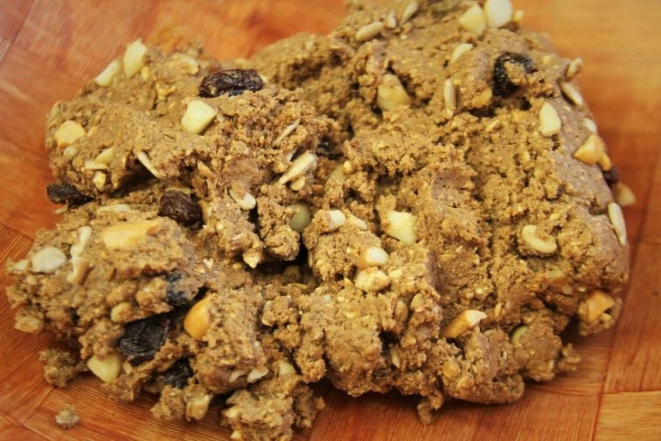
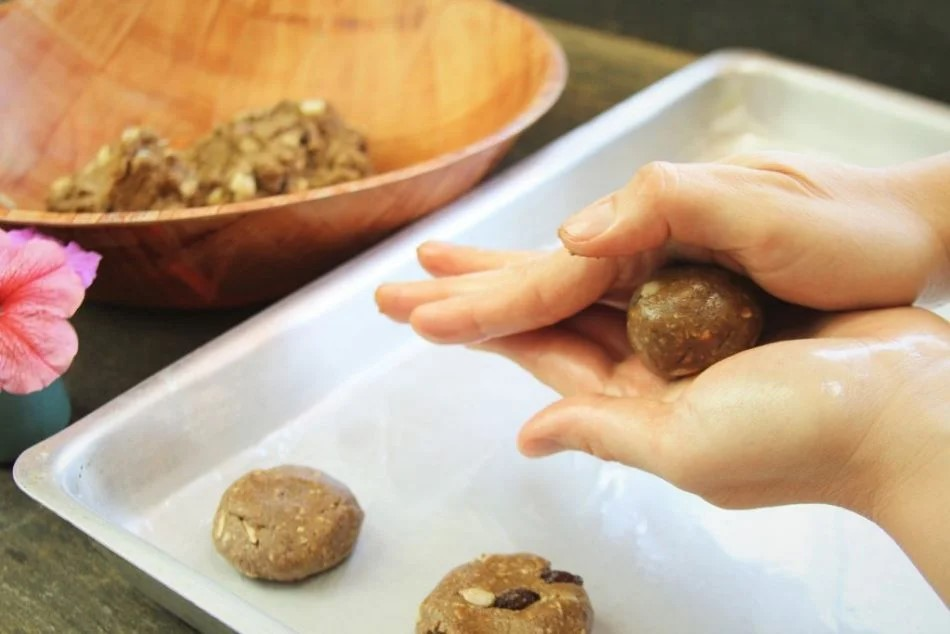
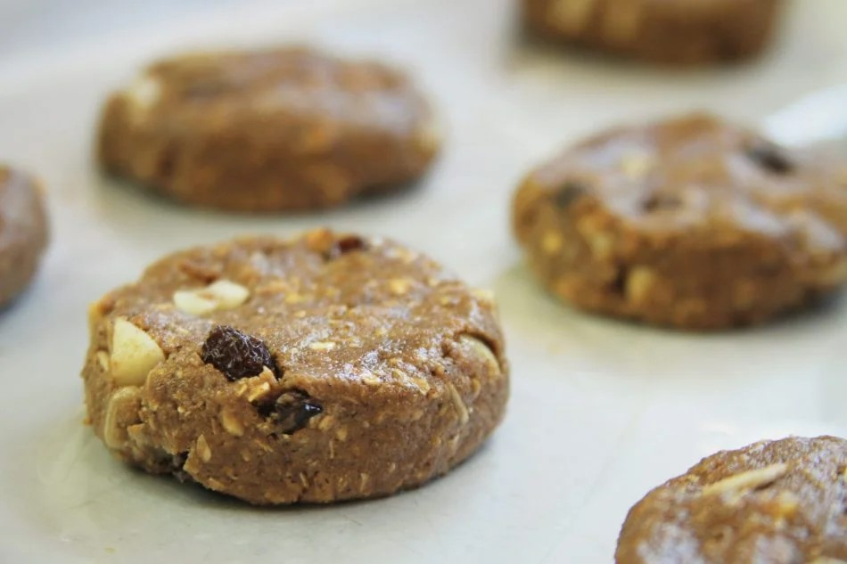
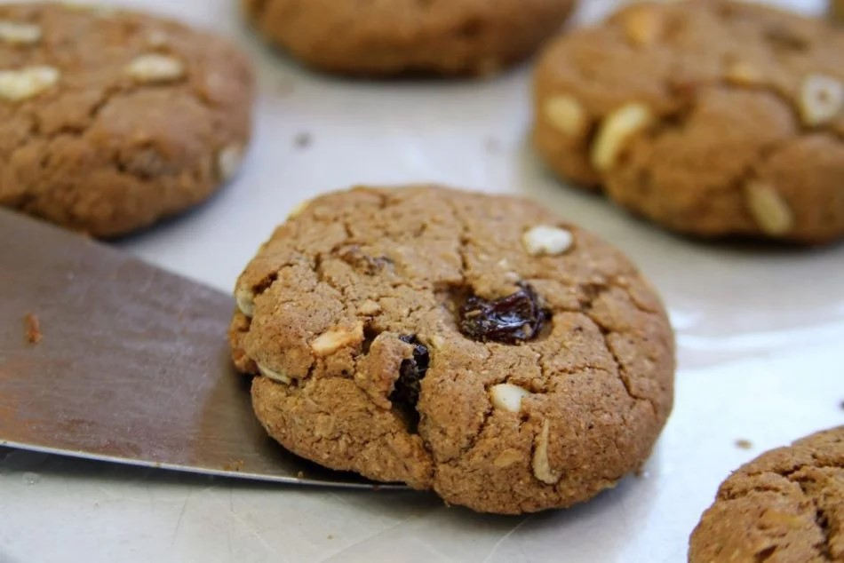

1/2 xícara de manteiga de coco amolecida ou use manteiga (para amolecer a manteiga de coco basta colocar alguns segundos no micro-ondas ou derreter em banho-maria, precisa estar bem molinha pra conferir a textura correta à receita)
1 ovo
3/4 xícara de açúcar mascavo
1/2 xícara de aveia em flocos médios (use a versão sem glúten caso seja intolerante)
1/2 xícara de farinha trigo sarraceno (substitua por farinha de arroz integral)
1/2 colher de chá de sal
1 colher de chá de canela (opcional)
1 colher de sobremesa de gengibre em pó (opcional)
Pitada de noz moscada ralada (opcional)
1/2 xícara de mix de castanhas, sementes, passas ou chocolate (opcional – varie a mistura conforme os ingredientes que tiver em casa, nesta receita usei a combinação de castanha do Brasil, macadâmias, passas e sementes de girassol)
1 colher de chá de fermento em pó
1/2 colher de chá de bicarbonato de sódio (ou use 1 colher de chá extra de fermento em pó)
o biscoito fica crocante por fora e macio por dentro. As texturas das castanhas junto com as sementes de girassol deixam tudo mais interessante, e quando você morde uma passa vem uma doçura extra que lembra até chocolate
Em uma bacia bata a manteiga de coco, o ovo e o açúcar mascavo, para isso você pode usar um fuet (batedor de arame), uma colher de pau ou a batedeira.

Como eu tenho uma batedeira planetária eu gosto de usá-la porque agiliza o processo, mas não se preocupe pois a receita também vai dar certo se você bater apenas com a mão. O importante é que os ingredientes fiquem bem incorporados e você vai perceber que a mistura fica uma pouco mais esbranquiçada.

Se você estiver usando a batedeira planetária você pode adicionar à massa a aveia, o trigo sarraceno, o sal, a canela em pó, a noz moscada ralada e o gengibre em pó e bater tudo.
Se sua batedeira não for planetária é só adicionar a aveia, o trigo sarraceno, o sal e as especiarias e misturar com as mãos.

A massa fica um pouco grudenta, mas esta é a textura correta.
Agora é só finalizar adicionando o mix de castanhas, sementes, passas, o fermento em pó e o bicarbonato de sódio.

Misture rapidamente na batedeira planetária ou com as mãos.

Forre uma forma com papel manteiga e unte com um pouco de óleo.
Ligue o forno para preaquecer a 180º C.
Unte as mãos com um pouco de óleo e faça 12 bolinhas utilizando uma colher de sobremesa como medida.

Depois de fazer a bolinha basta colocar na forma e dar uma achatada na superfície pressionando os dedos sobre a bolinha.

Depois de modelar todos os biscoito é só levar pra assar em forno preaquecido 180º C por 12-15 minutos. Você vai sentir o cheirinho de biscoito fresco quando eles estiverem prontos, mas preste atenção, eles devem ficar levemente corados, se você assar demais pode queimar a parte de baixo.
Assim que eles saírem do forno utilize uma espátula para desgrudá-los do papel manteiga.

Coloque sobre uma grade para esfriar ou forre um prato com papel toalha para que o papel absorva o vapor que sair dos biscoitos enquanto eles esfriam.
Lembre-se que assim que os biscoitos saírem do forno eles ainda estarão um pouco moles, mas conforme eles esfriam ele ficam crocantes por fora.
A parte inferior dos biscoitos deve estar bem dourada como na foto abaixo:
Depois de completamente frios armazene em um vidro e mantenha bem fechado ou coloque em recipiente hermético. Se você não fechar bem o vidro ou deixar o pote aberto os biscoitos vão perdendo a crocância com o tempo.
Eu testei esta mesma receita com farinha de amêndoas, apesar de muito saborosa ela não ficou tão crocante como nesta versão com farinha de trigo sarraceno. Se você gostar de biscoitos crocantes sugiro que opte pela farinha de arroz integral ou a farinha de trigo sarraceno mesmo.
Se você quiser use a manteiga tradicional no lugar da manteiga de coco.
Para deixar ainda mais nutritivo você pode adicionar sementes de chia, linhaça ou abóbora além das sementes de girassol.
Esta receita rende 12 biscoitos e você pode armazenar por até 2 semanas em um vidro bem fechado ou pote hermético fora da geladeira, mas eu sinceramente acredito você vai comer tudo em menos 1 semana, pois são simplesmente deliciosos.